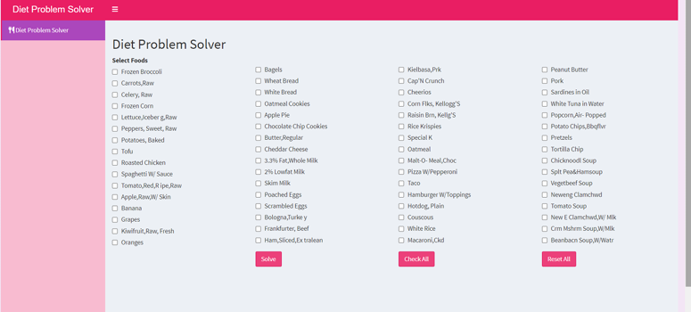
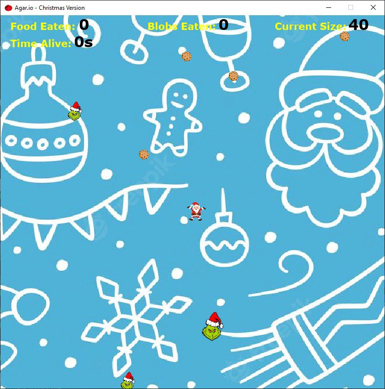
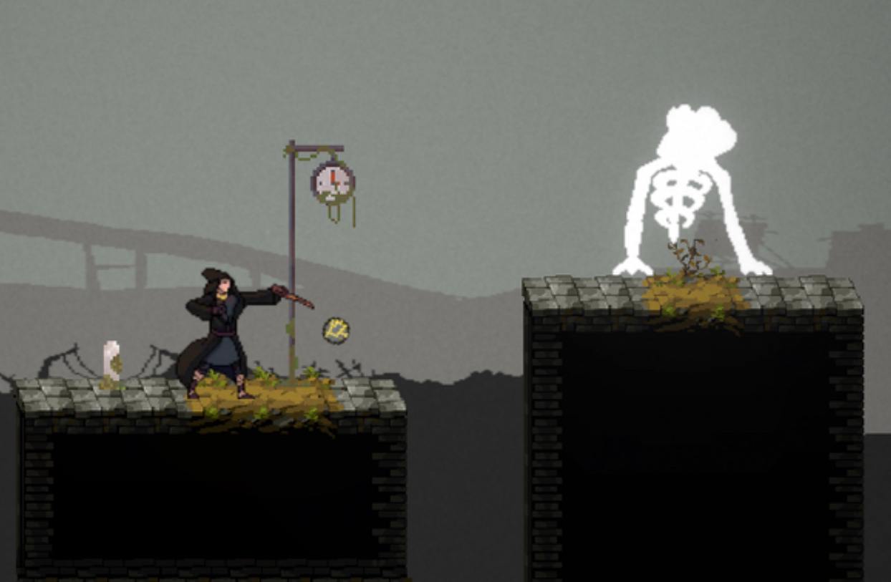

Diet Problem Solver is an R-based web application using shinyUI that consists of nutritional optimization tool designed to help users create a cost-effective and nutritionally balanced diet.

An interactive game using Java.

"Arcane Exodus" a 2D platformer and shooting game developed in Unity.
HTML
Java
Python
Database
Unity Game Engine
Trisha Jean Ramos was born and raised in Rizal Province, Philippines. She is an only child and a dedicated working student. Throughout her academic journey, she attended various schools, beginning at Binangonan Garden of Learners from nursery to Grade 4, followed by Knights and Archers Montessori School for Grades 5 and 6. She continued her education at Child Jesus of Prague School for Grades 7 to 10 and later completed her senior high school years at Rizal National Science High School. Currently pursuing her studies at the University of the Philippines Los Banos, Trisha is known for her ability to balance academics and work efficiently. She is a smart worker, excelling in time management and problem-solving. Her dedication to learning and adaptability across different educational environments have shaped her into a well-rounded individual, ready to take on new challenges in both academics and professional life.